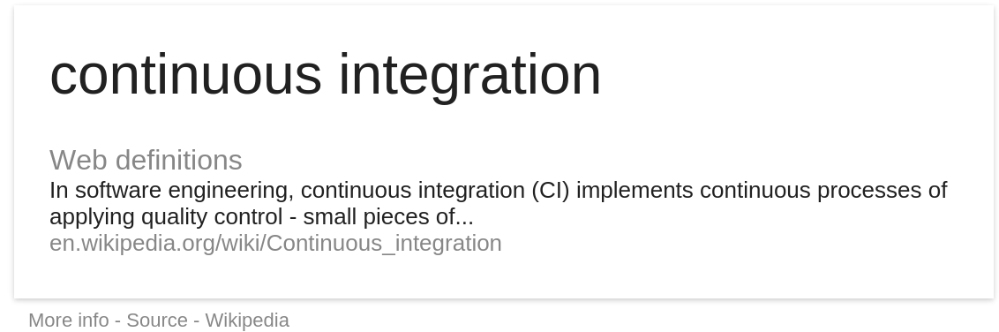
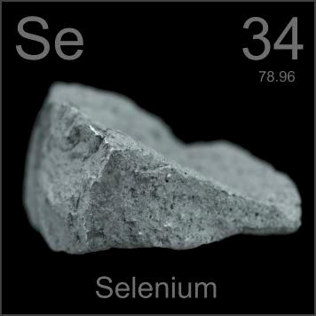

QA: Quality Assurance

QA
- Specs
- Tests
- Reports
QA Automation
We Will Cover
- What is continuous integration (CI)
- How does it make our lives better here at Ai
- Why Selenium and Fabric?
- How we use it here
What is continuous integration
Our definition: The parctice of merging your code base several times a day with the intent to be used in combination with automated unit tests.
How to implement CI
In comes Jenkins to the rescue
- What is jenkins
- Jenkins is an award-winning application that monitors executions of repeated jobs, such as building a software project or jobs run by cron.
What Benefit does CI have?
Saves Time
- which saves you!

Keeps Development Running Smooth
and on target

Push Button Deployment!
Push button code promotion
Deploys
Ai Automated QA

Ai Automated QA
- Scripting
- Link Finding
- So much more
Scripting
Selenium and Fabric
